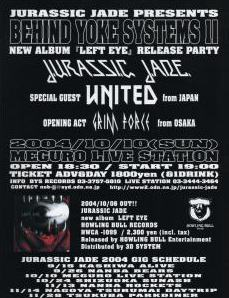
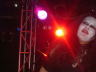
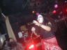
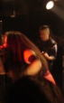

2004.10.10目黒LIVE SATION
BEHIND YOKE SYSTEMS 11
NEW ALBUM『LEFT EYE』RELEASE PARTY
出演: UNITED/GRIM FORCE
 |
●ＪＵＲＡＳＳＩＣ ＪＡＤＥ’Ｓ setlists
Divided Power,Reverse
Left Eye On The TV
Found It Out
Fight For What For
ゴーグル・太陽・月
テロルの季節
赤い兆し
9月の詩
G.D.G
くたばりやがれ
精神病質（Seisin-Byo-Shitsu）〜Go To The Dogs〜The Individual D-Day〜Chaos
Queen〜ドクロ独白〜誰かが殺した日々〜僕らの狂気〜After Killing Mam
鏡よ鏡
ドク・ユメ・スペルマ
-Encore-
香港庭園
●ＭＥＭＢＥＲ’Ｓ comment
ＨＩＺＵＭＩ
ＮＯＢ
GEORGE
ＨＡＹＡ
●ＡＬＢＵＭ
 |
| (C)Tommyさん撮影 |
 |
| (C)フジイコウジ氏 撮影 |
 |
| (C)さる氏 撮影 |
●BBS comment
凄かったですね・・・。 投稿者：NOB-JURASSIC JADE 投稿日：10月 9日(土)20時11分32秒
久しぶりに「ぴあ」を購入。何故ならCDリリースに「LEFT EYE」を取り上げてくれてるからです。嬉しい。
とうとう明日になりました。ニューアルバム「LEFT EYE」レコ発ライブです。
●10月10日（日）目黒LIVE STATION
BEHIND YOKE SYSTEMS 11
NEW ALBUM『LEFT EYE』RELEASE PARTY
OPEN: 18:30 START: 19:00
ADV: \1800+1drink AT DOOR: \1800+1drink
With: UNITED/GRIM FORCE
お時間おありの方、どうか！どうか！お越し下さい。お待ちしてます。
ゲストありです。お楽しみに。
＞wildcats 様
手に入れていただきましたか？明日お待ちしてます。
＞さる 様
揺れましたね。呆然と腰掛けたまま、やり過ごしました、どうしていいか分からなくて。
「左目」は未来を見透かす目でもあります。
気に入っていただけて、良かった。明日お待ちしてます。
＞藤井 様
深い考察、感謝です。「自分たちが考えている自分たち像」とギャップがあることが、また嬉しいです。明日ははしゃいで下さい。お待ちしてます。
＞Tommyちゃん 様
いつも見てくださってるから、変化が自然に受け入れられてたんでしょうね。
毎日見てると、背が伸びたのにも気が付かないみたいな・・・。（笑）
明日、頑張ります。お楽しみに
僕は、 投稿者：藤井 投稿日：10月10日(日)01時30分29秒
LED ZEPPELINに対しても、LUNA SEAに対しても、EAGLESに対しても、中島みゆきさんに対しても、BLACK SABBATHに対しても、JURASSIC JADEに対しても、個性的なアーティストに対してはいろんな視点で見てると思います。
でも、分析しすぎても良くないとは思いますけれど。
明日、よろしくです。
「行くぞ〜〜！！」 投稿者：藤井 投稿日：10月10日(日)17時23分57秒
お〜〜〜！「用意はいいか〜！」お〜〜〜！
ありがとうございました！ 投稿者：wildcats 投稿日：10月11日(月)10時44分43秒
昨日はお疲れ様でした！
いつもながらのJJらしい世界観を感じることができ、大変満足なライブでした。
しかもメドレーでは立て続けに6曲？もっとやったかな？
とにかく凄かった！
NOBさん、ありがとうございます！
31日も参戦予定ですので宜しくお願いします！（チケ1枚予約で！）
＞さるさん
どうもはじめまして。
タワーで購入できましたよ！
ありがとうございました！！！！！！！ 投稿者：NOB-JURASSIC JADE 投稿日：10月11日(月)15時46分44秒
昨夜のJURASSIC JADEのNEWアルバム「LEFT EYE」発売記念ライブにお越しくださった方々、ありがとうございます。そして来れなかったけど、CD買ってくださった方々ありがとうございます。
UNITEDのみんな・GRIMI FORCEのみんな、ありがとう。
目黒ライブステーションのスタッフのみなさん、感謝です。（22時に完全音止めなのに、アンコールやらせてくれてありがとう。押さないって約束したのにスイマセン・・・）
沢山の方々がCDやTシャツを買ってくださった。ありがとうございます。
＞wildcats 様
ありがとうございます！早速の書き込み。
前より続けて曲演奏できるようになったでしょう。（笑）
31日川崎BOTTOMS UPでお待ちしてます。チケット予約ありがとう。
昨日の目黒 投稿者：さる 投稿日：10月11日(月)17時18分36秒
1年振りの BYS お疲れ様でした。
Jurassic Jade の記念すべきライブに参加出来しかも打ち上げまでも(感涙)、
とても幸せな一日となりました、特大の感謝です！
ライブ終了後、暴れすぎて本当に吐くかと思いました(笑)とは言え、いつもの如く
ライブ前に摂取したチューハイ数本分は全て汗に変わり吐くものは無かったのですが。
LS出てからも地面に腰を落としてないとツライくらいの体力消費でした。
いつももっと聞きたい！とか、時間がもっと！とか言ってますが昨日の場合は逆。
「もう勘弁してください」と言いたくなるくらいのボリュームで嬉しい悲鳴ってやつでした。
是非これからもこのボリュームで(笑)
ライブの方ですが、「Divided...」が「ドク...」の指定席を奪取しましたね、
その代わり「ドク...」が「鏡...」の指定席を奪取。
曲の世代交代が起きていてスゲー嬉しかったです。
そして、それまでのライブでも体験していた「Left Eye」収録曲達、
さんざん聴きまくってからの生体験は今までと何かが違いました。
というか"新曲"って言葉に違和感を感じるくらい。
完全に消化吸収して自分の肉体に入ったみたいな‥うーんうまく表現できませんね(苦笑)
今月は3週間後にまたライブ♪次回も「せーの！」をご一緒させて頂きますね。
ちなみに「赤い兆し」、自分の中でのJJ楽曲重要ポジションがかなり高いです。
当日の模様、いつもの如くアップさせていただきました。
再度になりますが本当に大変感謝しております、ありがとうございました。
これからもよろしくお願いします。
http://home.g03.itscom.net/boana/
賭け 投稿者：Tommyちゃん 投稿日：10月11日(月)18時38分22秒
昨日は、お疲れさまでした！！私は、さるさんと違って、もっと観ていたかったです！！
ライヴ前にKABBALAさんと、どの曲で始まるか賭けてたんですよ！！
私は「9月の詩」KABBALAさんは、「ドク・夢」です。
2人ともハズレ〜〜〜〜〜〜！やられました！！(爆)
“いい人のフリしてニコニコ行こういい人のフリして〜♪”が頭から離れない。
私は、「テロルの季節」の“Lir,lie.lie.”を歌詞で見るまで、「ライラ」と
聴こえていたんですよ〜あの連合赤軍の落とし子です（知ってる人いるかな？）
“Die.die,die”は、「堕胎」です。考えすぎだったのかもしれない。
「9月の詩」の“Do it！”は、ずっと“飛べ！”と歌ってました！（大汗）
HIZUMIさんの、潤んだ瞳が凄く印象的だった…。泣いてるようにも見えた…。
Nobさんの動きある写真を！と思ってシャッター切ったけど、やはり
上手く撮れなかったっす、ごめんなさい！！m(__)m
Galleryアップしたので、よろしかったら覗いてやって下さい！いつもありがとう♪
http://homepage3.nifty.com/tommy666/
遅くなりました！ 投稿者：野口 投稿日：10月12日(火)00時58分44秒
メンバーの方々、昨日はお疲れさまでした。JJのライブは92年の鹿鳴館以来12年ぶりでした。古くからのバンドが変貌して行く中、JJも進化して行く傍ら、精心と思考及びヴィジュアル面等を貫いている事に、安堵しまた熱く血が騒ぎました。これからもJJ流ｶｵﾃｨｯｸﾃﾞｽﾗｯｼｭｻｳﾝﾄﾞを貫いてください！
NOB様＞色々お手数おかけしました。これからもできるだけ、ライブには足を運ぼうと思いますので、宜しくお願いします！
GEORGE様＞“KILLER Ｇ ”に宜しく！（私事でスイマセン…）
では長文失礼しました！お疲れさまです。
なにはともあれ 投稿者：あや 投稿日：10月12日(火)00時59分8秒
ひさびさのＪＪ、楽しかった！！！
ポスターもって帰ったけど、家に貼る許可は下りませんでした。
お疲れ様です！ 投稿者：仁@sunny park 投稿日：10月12日(火)12時54分50秒
ライヴから打ち上げまで参加させていただきました！久々のJJに圧倒されました！
それにしても自分落書きされたままマックに行って店員がもの凄い顔してましたよ（笑
お疲れ様でした 投稿者：mibo 投稿日：10月12日(火)15時38分0秒
日曜日はお疲れ様でした。
予習の甲斐あり、今までとはまた違う感じで楽しませていただきました。
ＣＤは聴くたびに、1曲1曲がいいなぁと思い、あの曲もいいし、この曲もいいし、、、
と、結局全曲が良くて、選べません。仕事中も頭の中で流れてて、たまに「せーの」って呟いてます。。。
ライブはもう、すっごく楽しかったです。ホント、もっと観たかったぐらいです。。。
次回のライブも楽しみにしています。
いやぁ 投稿者：ＭＺＭ 投稿日：10月12日(火)15時43分23秒
こないだはお疲れ様でした。本当に頭が下がります。サブちゃんとも話してたんですけど本当にヤバイバンドですよね！また近いうちに一緒にやりましょう。今度はヒズミさん借りますよ(笑)もちろんレコーディングでも借りちゃいますからね(笑)それではまた近いうちにでも！
ライブお疲れさまでした！ 投稿者：JINBO 投稿日：10月12日(火)16時29分12秒
JURASSIC JADEのライブは初めて見たんですが、とにかく凄かったです！あの爆音は病み付きになりそうです（笑）また必ず見に行きます(^O^)
http://ip.tosp.co.jp/i.asp?i=mad_violence
楽しかったです！ 投稿者：ゆき 投稿日：10月12日(火)19時29分48秒
日曜のライブ、最高に楽しめました。北陸から参戦した甲斐がありました。どうもありがとうございました！！
藤井さん＞大変お世話になりました！感謝してま〜す！
このグローブ…もらってくれ｡あんたに…もらってほしいんだ… 投稿者：藤井 投稿日：10月12日(火)21時45分2秒
といって、真っ白に燃え尽きていました。あれから48時間ぐらい。
しかし、またまた復活の兆し…というわけで、なんとか週が始まりました。
書き込み遅くなりました。僕もある事情でいっぱいいっぱいになりました。（笑）
今回のライヴほど、曲をやったライヴが過去にあったのでしょうか？僕の記憶ではありません。しかも、前作からが"G.D.G"のみだったり、「AFTER KILLING MAM」でも物凄く詞が好きな"Chaos Queen"も聴けて、最強でした。
デジカメの電池が切れてしまったのが、悔やまれますが、まぁ、それでも、まぁまぁな写真が撮れましたので、送りました。
アルバムで歌詞が判ってからというのは、なんか違って聴こえるし、僕は、まだ"Left Eye On The TV"が”憎しみの大地Gaza”だった頃から、あのサビはなんと言っているのか気になっていたので、やっと一緒に大合唱できました。
あと、リクエストで”天安門〜”とか無理言ってすみません。"Terror The Beast"とか挙げればキリがないほど名曲が沢山あるので、LED ZEPPELINの昔の大阪公演みたいに4時間やって終電を奪うライブをやりましょう。（って、ライブステーションに怒られる！）
久方ぶりにライブにいらっしゃった方もいるようで（僕も11年見ていなかったのですが'99年までは）、変わっていない部分、変わった部分いろいろあるように感じられると思いますが、今回のアルバムを聴けば、いろんな意味で納得できると思います。
今も昔も旬なのが、JURASSIC JADEです！！
＞Nobさん
あんなにワイルドなステージングは17年前にも見たことないです。かっこ良かった。たまには暴れて弾いてみて下さい！！
あと、私信ですが、がんばります！！
＞Hizumiさん
歌詞の作り方のアプローチに関して考えていることと一緒だったから、やっぱりそうか、と思いました。そういう意味では僕は、歌詞がかけません。もうちょっとHizumiさんみたいなお洒落な歌詞が書きたいです。
＞Georgeさん
今回は、あまりお話できませんでしたが、頭の剃り込みがカッチョえがったす！！
＞Hayaさん
そうで〜〜す。僕のいいヒトで〜〜す。（笑）な、わけないって！！
＞さるさん＆クィーン様
ワシのエア・ドラム、やっぱりヤダかな？すみません、次もやりそうです。
でも、”9月の詩”のリフのところは、エア・ギター化します。
＞Mibo姫
凄いな、仕事中もJJに「ぞっこん」ですな！
＞Tommyちゃん
僕も”9月の詩”だと思ってましたよ。
＞ゆきさん
「やっと二人きりになれたね…」ってこのネタ分かったら、ヤバイ。（笑＆汗）
いや、いろいろとお話できてよかったです。
また来て下さいよ、東京。今度は、ちゃんと東京見物もして…。いや、今度は年末、名古屋、大阪とか行こうぜ！それまではアルバムを吟味しよう！！
その他、会場で会った方々、お疲れ様でした！！
さて、今日、VOIDDの「サイコロ」を買いに、御茶ノ水のDISC UNIONへ行ったら、あのアルバムが「ア」の行にあって、店員さんもどこにあるのかわからないで探してたんですが、なんと「LEFT EYE」が海外のハードコアのコーナーに入っていたので、苦笑…。たのんます〜〜〜！UNIONさん！！
ありがとうございました！ 投稿者：ちゅうりん＠GRIM FORCE 投稿日：10月12日(火)23時20分4秒
先日のJURASSIC JADE、今まで見た中で間違いなく最強でした！
ライブ後に何故か腰を痛めて、歩くのも大変な状態でしたが
痛みを忘れて見入ってしまいました。
見ていて今物凄くBNADの状態が充実しているんだなと感じました。
今度は来月、大阪にてお待ちしておりますのでよろしくお願いします！
せっかくなのでその宣伝を。
11月13日(土)＠難波ROCKETS
SPEED KILLS 〜into the pit〜vol.20
JURASSIC JADE NEW ALBUM発売記念
出演
■JURASSIC JADE
■GRIM FORCE
■BEHAVIOR
■GODIE
■FREE WILL
open 18:00 / start 18:30
adv 1,800yen / door 2,300yen
JURASSIC JADEの演奏時間はタップリ1時間ありますので
皆さん是非遊びに来てください。
前売りチケットお取り置き賜ります。
お名前・必要枚数を明記の上churin@grimforce.comまでメールして下さい。
よろしくお願いします。
http://www.grimforce.com
レス第一弾。 投稿者：NOB-JURASSIC JADE 投稿日：10月14日(木)21時19分1秒
遅くなりました！すいません。
＞wildcats 様
楽しんでいただけたようで、嬉しいです。
wildcatsさんの感じる「JJの世界観」でどんな感じですか？
今度聞かせてください。
＞さる 様
朝まで付き合ってくれて感謝です。
また、アルコールを汗に変える人になっちゃいましたね。
その時、エネルギーが生まれるんですかね？科学的に。（笑）
写真のUPありがとうございます。またまた、雰囲気のある写真たち。
近日中にリンク貼らせて頂きます。OKですか？
＞Tommyちゃん 様
歌詞は考えすぎじゃないかもしれませんね。そんな感じで歌ってた時もあるかも知れません。最終的に歌詞カードに掲載されている形だというだけで。
HIZUMIは連合赤軍を気にしてますから、知ってるんじゃないかな？
写真ありがとう。リンク貼らせて貰いますね。
＞野口 様
久しぶりに見ていただいたJURASSIC JADEが、野口さんの期待を裏切らなかったようでほっとしてます。ありがとうございました。声かけてくださって嬉しかったです。
時間おありの時また見てやってください。
＞あや 様
お疲れ様！「誰かが殺した日々」のポスターだよね？
厄除けになりそうなのに。
あれもHIZUMI的祈りのポーズだと思う。
コンセプトは多分「仏像」・・・、多分。
続きは後ほど。
レス第二弾＆打ち明け話 投稿者：NOB-JURASSIC JADE 投稿日：10月14日(木)23時23分5秒
■打ち明け話 その一
先日のレコ発ライブで、8月に亡くなった眞美さんの写真（笑顔・ワタナベイケマツの結婚パーティ二次会での）を客席にそっと掲げていました。JURASSIC JADEを見てもらいたかったからです。やさしく見守ったくれていたと思います。彼女に最後に逢ったのも目黒ライブステーションでした。生き残った俺達は「命のありがたさ」を謳歌しようよ。それが亡くなった人達への手向けだと思います。
■打ち明け話 その二
「9月の詩」をプレイした時、演奏しながら、マジマの姿・声を追い続けてしまいました、一緒にステージに立っているのに。
そして内心「俺達SUNS OWL？（笑）」などとうぬぼれながら・・・。
＞仁@sunny park 様
お疲れ様！SUNNY PARK大活躍だね。
そして打ち上げでみんなにいじられて嬉しそうだったね。覚えられたね、先輩ミュージシャン達に。
＞mibo 様
ありがとうございます！最前列での参加。
捨て曲や埋め合わせの曲は一曲も無いので、どれも良いっておっしゃっていただくのは、とてもとても嬉しいです。また、見てやってください。
＞ＭＺＭ 様
まじま！ありがとう。CDとは違うバージョンをかましまくってくれたね。見てくれた人達はとてもラッキーだったんじゃないかな。上にも書いたけど、生意気にSUNS OWLの一員になった気分でした。嬉しかった。早く一緒にやりたいね。みんなによろしく。
＞JINBO 様
ありがとうございました！いらしていただいたんですね。感謝です。
また、チャンスがあったら見に来てください。
＞ゆき 様
お疲れ様！遠くから本当にありがとう。バスの旅疲れたでしょう？乗り物酔いは大丈夫だったかな？
JURASSIC JADEが北陸方面に伺わないのがいけないんだよね。だれか呼んでくれませんかね？春頃に。
打ち上げで、座ってるポジションが良かったら、もっと話出来たんだけどね。
出会いに感謝です。またね。
＞藤井 様
こちらもいっぱいいっぱいです。（新曲作り）
やっと、ちょっとは動けるようになった。でもおっちゃんの動きです。
ちょっと斜めに立ってのエアードラム＆エアーギターかなり目がいきます。（笑）
JURASSIC JADEが海外のハードコアコーナーはまあOKだけど、VOIDDの「サイコロ」が「ア」の行にあるのはひどいね。（笑）
＞ちゅうりん＠GRIM FORCE 様
お疲れ様！良いライブお互いにやれて良かった。
腰はどうですか？心配だね。
11月13日よろしくです。頑張ります！目黒より良いステージ目指して・・・。
BACK TO